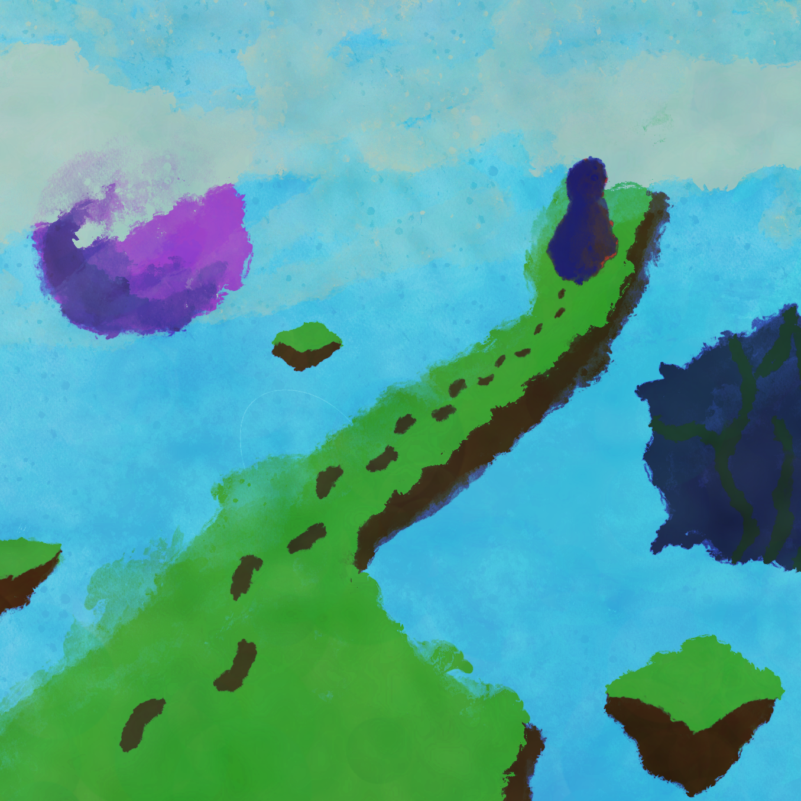
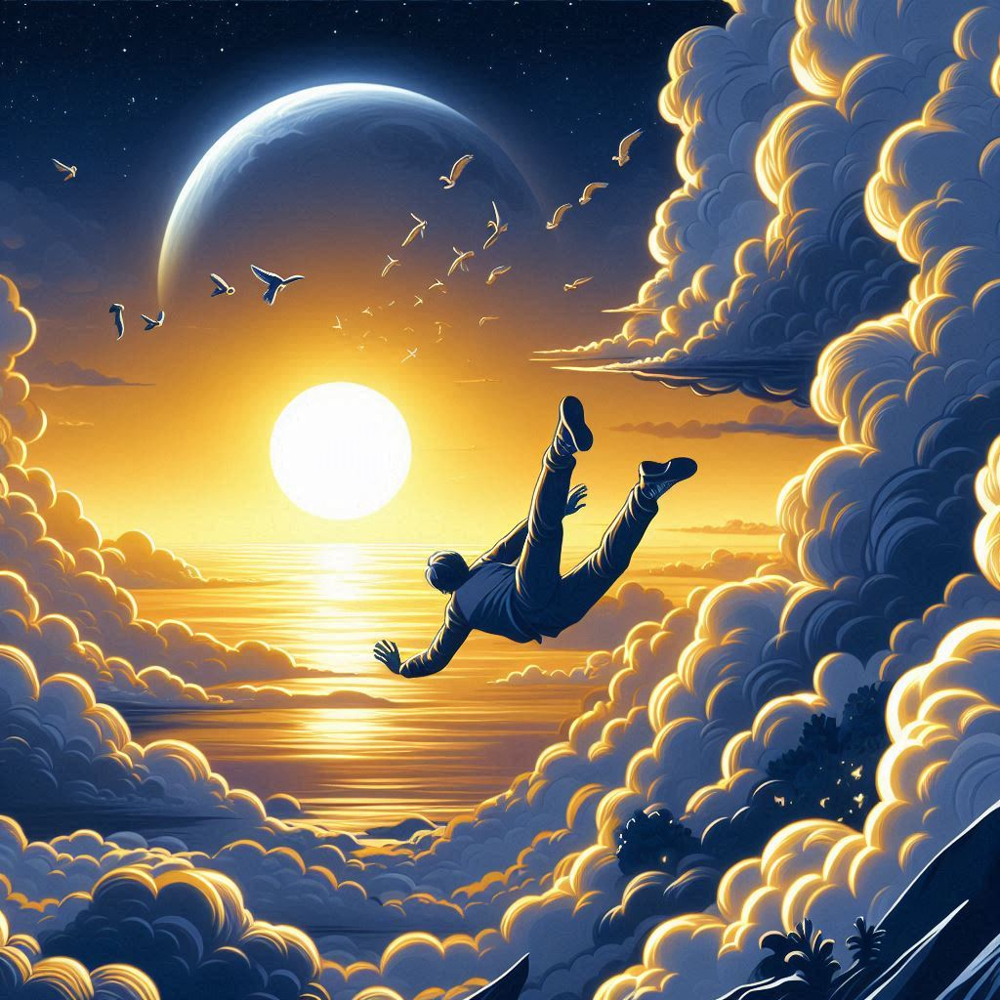
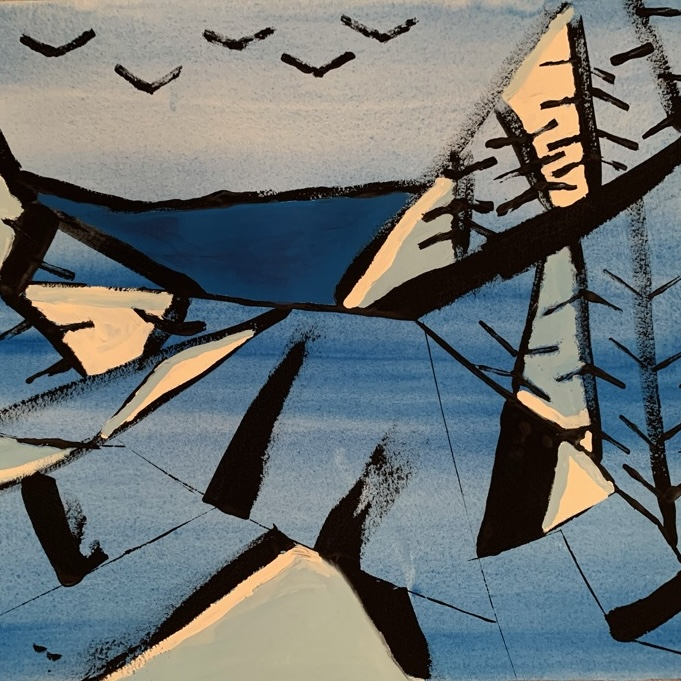

Musician
I graduated with a BA in music from Carleton College in November of 2024. I'm a composer, producer, and music experimentalist. I love dabbling with different instruments, from western instruments like the piano, drums, and guitar to Chinese musical instruments like pipa, guzheng, and erhu. I have composed pieces for Carleton's Chinese Music Ensemble, small chamber groups, and I have produced works of my own. I'm particularly interested in using music to tell stories through film, television, and performance.

Projects
-

Guideless the Musical
Guideless is a narrative-driven musical project that explores loss, healing, and the search for meaning through a blend of storytelling, found sounds, and genre-fluid composition. Inspired by personal experiences, it invites listeners to reflect on their own memories and create their own sonic landscapes in response.
Listen on SoundCloud -
Silence of the Moon is a musical theater ballad of a man reflecting on the influence of his past relationship.
Watch on Youtube -
A small chamber piece written for the erhu, dizi and the cello. Watch on Youtube
-

Journey in the Clouds
Written for the Carleton Chinese music ensemble, "Journey in the Clouds" depicts a young man's journey plagued by his past.
Watch on Youtube -

Lullaby
During a panic attack, Luke hears his mother's voice helping him calm down. Lullaby received the 3rd place award in the Macphail Center for Music's, 2021, Healing Collage. Listen on SoundCloud